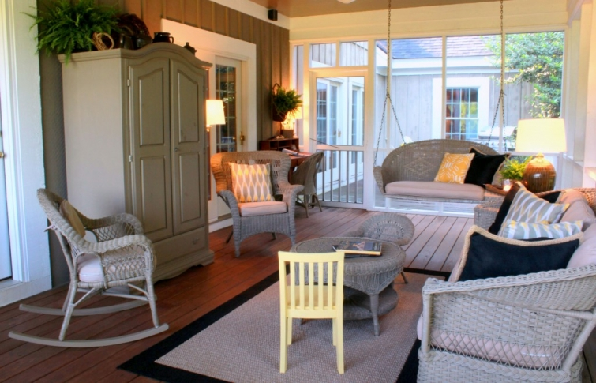
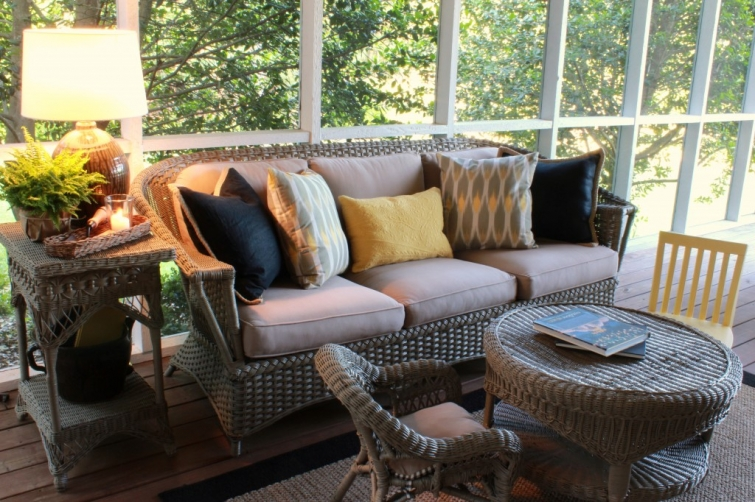
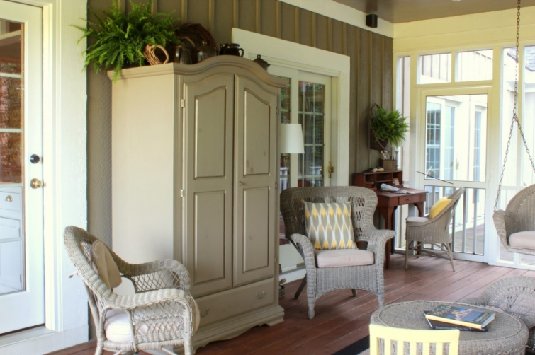

.png)
.PNG)
.PNG)
.PNG)
.PNG)
.PNG)
.JPG)
.JPG)
.PNG)
.PNG)


Spray painting the wicker made a huge difference in the mood of the porch. I really like how it has turned out (although my beginner photography skills are not conveying the real color of the paint. It is actually more green than gray…tilt your laptop monitor back some. 🙂 )

If you read part 1 of this porch adventure, you might notice that the furniture has been rearranged among other things. Our kitchen and dining room both open onto and look out on this porch. Previously the view was of an antique wicker table. I thought perhaps it would be better if you could see the sofa with all the throw pillows on it when you looked out the doors.

So the sofa was moved to the opposite wall, and the big cabinet was moved over between the doors.

This super useful cabinet started out in my daughter’s bedroom, but when we made some changes in the playroom, she inherited a cabinet from in there, and the back porch inherited this wonderful wardrobe. So instead of holding cute little dresses and hats, it now holds baskets, lanterns, candle sticks, vases, and our ice-cream churns. Everybody needs a cabinet on their back porch like this.
Next to the cabinet is my favorite wicker “wingback” chair (which actually started out in our sons’ bedroom.)

Behind the large wicker chair you will see a little desk.

When I was in my early teens, my mother took me to a flea market. We spied this cute little desk, buried under a coat of bright orange paint and other layers of beauty. I paid $10 for this treasure – yep, it’s true. It was my first furniture purchase and my first experience with stripping. (You know I am talking about furniture. 🙂 )
Here is a closer look at some of the things on the desk.

The very first thing we bought when my husband and I were married, was a porch swing for our then little screened porch. We sat on it for many many years, but eventually it was no longer usable. It was replaced by this wicker swing, and we love it.

Beside that end table is the sofa. Here is another view of it…this one taken one morning. It is really nice out on the porch early in the morning.

On the other end of this space is our porch dining area. We had a round wicker table and chair set there forever. It was a set that I had driven 30 miles to purchase. I had tied it onto the truck, and it flew out of the back on the way home – in the middle of the interstate no less. (Obviously, my rope skills weren’t very good!) Luckily enough, no one wrecked and a nice gentleman stopped to help me and tied it all back on. Thank goodness for the kindness of strangers! Anyway, after 28 years of use, the table and chairs were pretty much only held together by spraypaint. It was time for something new.
My husband had built a long table for our deck years ago. The base was good, but the top was rotten. So he reused the base and built a new much wider top for it.
This is how it turned out.
The chairs are antiques that we bought during the first year of our marriage. They are not really sturdy enough for daily wear and tear, but they work for the porch use. Here is a little closer view of what is on the tabletop.
And that brings us to the last stop on the tour. This area is still not quite finished, and probably won’t be for awhile.

The table is the one that belonged to my husband’s grandmother, and it also has had a new top made for it. It works great for a buffet. This area is not finished because I want to find something to hang above the table…a cabinet…shelves…just not sure yet. So now I can have fun hunting for it (whatever it may be), or perhaps sketch out an idea for my hubbie to build.
This ends our little back porch tour. I hope there was something here to give you an idea that you can use in your own home – or maybe motivate you to buy yourself a paint sprayer. 🙂
Before I leave you, I have one other thing I want to do. The other day Aimee from Sixteen Fourteen sweetly bestowed the Liebster Blog Award to me and my tiny blog. Aimee has a neat blog, a killer photo gallery in her husband’s office, wonderful Pinterest boards, and she just wrote a post about porch inspiration (that’s funny and inspirational!) How’s that for good timing? You should go read it.
Anyway, “Liebster” means precious, and I want to pass this award on to someone who has one of THE most precious blogs around….
Elizabeth at Lovely Little Parties.
Her children’s parties should be pictured in the dictionary next to the word precious. Love them! You should go check them out too (and then get busy on your porch. 🙂 )
Until next time…


.PNG)
I adore your porch! We are about to build a screened porch with a fireplace and I have been scouring the Internet for inspiration! (That’s me that has been stalking all your Pinterest boards!😉) I am truly in love with your porch and plan on showing my contractor all these beautiful pictures!! They won’t start building until the fall. I can’t wait to start enjoying it and I can only hope it turns out half as beautiful as yours!! You are so talented! Thank you so much for sharing your gifts with all of us!!
Stacy
PS I was hoping Holly would convince you to start instagramming!!😊
I so love this room. You’ve made it modern and nostalgic, open and airy – but warm and inviting too. I grew up in CT adoring my grandparent’s wicker filled sunporch. I remember helping my grandmother re-paint all the furniture sunny yellow when I was about 12, and your post reminded me of that. What a great room you’ve created for your family. Bravo.
——————————————————————–
Belinda – What sweet words! How cheerful a room full of yellow wicker must have been. I would have loved that! Thank you for reading the post and leaving your kind comments here. I hope you have a wonderful weekend!
Kelly
Hi, Kelly! I learned about your blog from one of my new blog friend’s-Phyllis from blissitydoodah- and I had to make a quick hop over here before church. I’m home now looking things over more closely, and I love everything I see. I want an “Earl” in my life! Have to ask-do you get rain on your screened porch? I’m leery about putting “furniture” on mine. I’m following you and can’t wait to see what you come up with next!
———————————————————————-
Hey Susan! So glad you stopped by from Phyllis’ blog, and I am glad you like the things here. Everybody that spraypaints needs “Earl”. I get rain on the end by the table if it blows in. I get some splash on the end by the desk, but not too bad….we are usually in a drought here! My wooden pieces have a type of waterproof finish on them. All the wicker is painted with exterior paint, and all the cushions are treated with a fabric protector (Scotchguard).
Kelly
I do remember coming here now!
I saw your porch but didn’t comment I don’t guess…
well I love it! It is so Southern and so restful looking, too.
Each little detail looks inviting.
I have a front porch you can come tackle!
I can’t stand the heat though…I’ll just look out the window
at whatever you do LOL.
————————————————————————
Thanks for the sweet compliments on my porch, Phyllis. Get you some ceiling fans out on your porch so that you can enjoy it more! You’re going to say you want air conditioning, right? 🙂 (Air conditioning would be great here in August – fans just don’t do the trick then.)
Please come back to visit again. I love your comments!
Kelly
Love your beautiful porch and your blog too!
Have a great week,
Michelle
Kelly, I’m just catching up on a few blogs…..thank you so much for your kind words. You are too sweet! Your porch looks amazing. I love the new wicker color……oh, and you should definitely make the hot browns! You don’t have to have Derby as an excuse either!
Cheers!
Makes me want to curl up on the swing with a book and sweet tea- beautiful!
———————————————————————–
That would be a good thing to have out on the porch, Kelly – especially now that it is over 90 degrees here today. The ceiling fans are going full force! Thank you for stopping by to read and take a look.
Kelly
This looks great! I love it all. Amazing how the tilt of the monitor shows that green-cool color. I especially like your little ten dollar table.
———————————————————————-
Instant color change just by tilting your screen! Wish I could do the same thing with rooms in the house, Pam! Isn’t that little $10 desk wonderful? One of my best bargains around. I’ll have to show y’all my other desk bargain later..it was a true yard sale find! Thanks for reading and leaving your nice comments Pam.
Kelly
Gorgeous! I am just wondering how do you keep it all “safe” and beautiful from the elements? I am always fighting mositure,dust, etc… on our screen porch…??!!
———————————————————————-
I am glad you like it too Amanda! As far as keeping it safe from the elements…the side with the sofa has a deep overhang on the roof, so it does not really get terribly wet. (All the cushions are treated with a waterproofing spray.) The end with the dining table gets wet if there is wind with the rain (as was the case on prom night.) The other end gets some splash from the deck, but the only thing that gets wet there is the desk – and it is has a polyurethane finish on it. If there is no lightning, I like to sit out there during a rainstorm.
Dust is not that big a problem…easily vacuumed (the floor and the furniture) with my wonderful Dyson vacuum cleaner. BUT when pollen season rolls around it is AWFUL for about a month. It is a horrible yellow powder that blankets everything. Usually that is March, and I threaten every year to wrap the whole thing in plastic for that month! We just wait it out and then hose down all the wicker, vacuum all the cushions, and the rug (and the walls!) and do our annual spring cleaning out there when the evil pollen stops falling. Other than that terrible month, it is pretty easy to maintain with a vacuum cleaner.
Kelly
hi kelly ~ your back porch is beautiful!!!! and your styling is perfection! right out the pages of a magazine!!! xo, tessa
———————————————————————–
I’m glad you like the back porch, Tessa. It is my favorite space in the house (well, I guess it is not really IN the house. 🙂 ) Wish I could get all you sweet readers to come sit out there for a visit.
Kelly
Absolutely stunning, Kelly! Off to check out Lovely Little Parties. 🙂
———————————————————————-
Aimee you are too kind! Thank you. I know you will enjoy Elizabeth’s photos over at Lovely Little Parties.